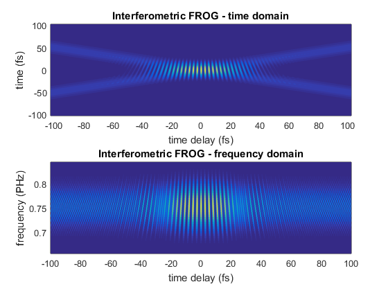

Example of interometric frequency resolved optical gating
Frequency resolved Optical Gating (FROG) is a popular technique for measuring ultrafast laser pulses. In this example we show how to simulate FROG in collinear geometry. This is not the most common implementation, but it is the easiest to implement using a pulse-shaper.
Contents
Define a LaserPulse object
Let us define a 10fs Gaussian pulse, centered at 800 nm, with a group delay dispersion of 100 fs^2.
p = gaussianPulse('f0', 300/800,'dt',0.2,'nPoints',2^10,'fwhm',10); GDD = 100; % fs^2 p.polynomialPhase([GDD 0 0]);
Create a pulse sequence
For creating a pulse sequence, we multiply the frequency domain electric field by a cosine amplitude modulation.
% the cosine amplitude modulation is stored in a matrix with frequency % on the first dimension and time delay on the second dimension timeShift = cos(2*pi * p.frequencyArray * p.timeArray'/2); % set activeDomain to perform the multiplication in the frequency domain p.activeDomain = 'frequency'; p = p * timeShift; % now p contains a pulse sequence
Calculate the second harmonic
% harmonics are easier to calculate in time domain p.activeDomain = 'time'; p2 = p.^2;
Plot the FROG traces
figure() subplot(2,1,1) pcolor(p2.timeArray,p2.timeArray, p2.temporalIntensity); shading flat xlabel(sprintf('time delay (%s)', p2.timeUnits)) ylabel(sprintf('time (%s)', p2.timeUnits)) title('Interferometric FROG - time domain') subplot(2,1,2) pcolor(p2.timeArray,p2.frequencyArray,p2.spectralIntensity); shading flat xlim([-100, 100]); ylim([-1.5 1.5]*p2.bandwidth+p2.centralFrequency) xlabel(sprintf('time delay (%s)', p2.timeUnits)) ylabel(sprintf('frequency (%s)', p2.frequencyUnits)) title('Interferometric FROG - frequency domain')